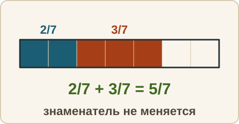
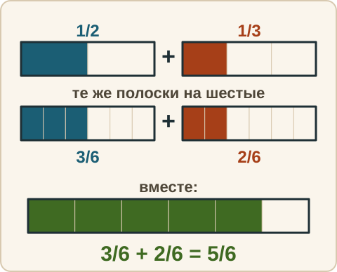
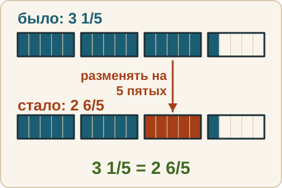
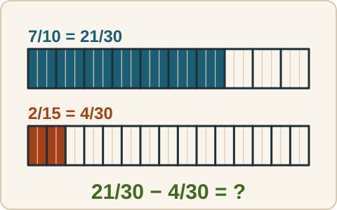

Математика: база · занятие 6Сложение и вычитание дробей
Цель: ты складываешь и вычитаешь дроби с одинаковыми и разными знаменателями и смешанные числа, сокращаешь результат и выделяешь целую часть. Это задание 6 ОГЭ в самом частом виде. Смесь сегодня — недельный срез. Ответы и подсказки спрятаны: сначала реши сам, потом нажми кнопку.
Как записывать ответ. Число — целое число. Дробь — через черту и сокращённая до конца, например 3/4. Смешанное число — целая часть, пробел, дробь, например 2 3/4. Знак — один символ: <, > или =.
Вспомнить
Без подсказок, сразу проверка. Отмечай, на чём споткнулся, — в журнал.
- Знак: 5/8 и 7/12.
- Найди НОЗ чисел 6 и 8.
- 29/6 — запиши смешанным числом.
- 3 3/4 — запиши неправильной дробью.
- Сократи 35/49.
- 4 − 13
Беглость: до целого и одинаковые части
Две игры. Ошибся — пример вернётся: попробуй ещё раз. Без таймера.
Игра 1. «До целого». Сколько не хватает до 1?
- Сколько не хватает до 1: 1/4.
- Сколько не хватает до 1: 2/5.
- Сколько не хватает до 1: 5/8.
- Сколько не хватает до 1: 7/10.
- Сколько не хватает до 1: 4/9.
- Сколько не хватает до 1: 1/6.
Игра 2. «Одинаковые части». Складываем в уме доли одинакового размера. Результат сократи.
- 1/4 + 1/4
- 1/3 + 1/3
- 3/8 + 3/8
Правило
Правило 1. Одинаковые знаменатели. a/c + b/c = (a + b)/c и a/c − b/c = (a − b)/c. Здесь a и b — числители (сколько частей у каждой дроби), c — общий знаменатель (на сколько равных частей разделено целое). Знаменатель не меняется: размер частей тот же, мы лишь считаем, сколько их стало. Результат сократить, если можно. Если числитель вышел больше знаменателя, выделить целую часть.

Правило 2. Разные знаменатели. Складывать и вычитать можно только части одного размера. Поэтому сначала приводим дроби к наименьшему общему знаменателю (занятие 5), потом действуем по правилу 1.
Из жизни. К половине пирога добавили треть такого же пирога. Сколько всего? Режем всё на шестые доли: 3/6 + 2/6 = 5/6.

Правило 3. Смешанные числа. Складываем отдельно целые части и отдельно дробные. Если дробная часть вышла неправильной, выделяем целую и добавляем её к целым. При вычитании (уменьшаемое — то, из чего вычитают, вычитаемое — то, что вычитают), когда дробная часть уменьшаемого меньше дробной части вычитаемого, «занимаем» единицу у целой части и превращаем её в дробь со знаменателем нужного размера: 3 1/5 = 2 + 1 + 1/5 = 2 6/5.

Разобранный пример
А. 1/2 + 1/3
- НОЗ = 6. Множители: 6 : 2 = 3 и 6 : 3 = 2.
- 1/2 = 3/6, 1/3 = 2/6. Складываем: 3/6 + 2/6 = 5/6.
- Ответ: 5/6.
Б. 3/4 + 5/6
- НОЗ = 12. Множители: 12 : 4 = 3 и 12 : 6 = 2.
- 9/12 + 10/12 = 19/12. Это неправильная дробь: 19 : 12 = 1 (ост. 7).
- Ответ: 1 7/12.
В. 2 3/4 + 1 3/4
- Целые: 2 + 1 = 3. Дробные: 3/4 + 3/4 = 6/4 = 1 2/4 = 1 1/2.
- 3 + 1 1/2 = 4 1/2.
- Ответ: 4 1/2.
Г. 3 1/5 − 1 3/5
- Дробная часть 1/5 меньше 3/5. Занимаем: 3 1/5 = 2 6/5.
- 2 6/5 − 1 3/5 = (2 − 1) + (6/5 − 3/5) = 1 3/5.
- Ответ: 1 3/5.
С подсказкой
Решай сам. Подсказку открывай, только если застрял.
- 7/10 − 2/15

Сам
Результат сокращай до конца, а если числитель вышел больше знаменателя, выдели целую часть. Два раза не сошлось — появится кнопка «Показать решение».
- 2/9 + 5/9
- 7/12 − 5/12
- 1/6 + 3/4
- 5/6 − 3/8
- 2 2/3 + 1 3/4
- 4 1/6 − 1 5/6
Ловушка
Ловушка. 1/2 + 1/3 = 2/5. Здесь сложили числители и сложили знаменатели. Так нельзя. Проверка прикидкой: 1/2 + 1/3 — это половина и ещё что-то, значит результат больше 1/2. А 2/5 меньше 1/2 (2/5 = 4/10, 1/2 = 5/10). Значит, ответ не сошёлся. В а) не складывай знаменатели: размер частей остаётся тем же. Проверь себя: частей какого размера считаем?
Смесь — недельный срез
Вперемешку: дроби, знаки, порядок действий, деление. Это итог недели: 10 заданий. Результат смотри в строке «Верно: N из 10» под заданиями.
- 1/5 + 2/5
- 5/6 − 1/3
- 1/4 + 2/3
- 3 1/2 + 2 1/3
- 5 − 2 3/7
- Что больше: 7/9 или 3/4?
- 21/6 — запиши смешанным числом после сокращения.
- (−3) · 9
- 6 + 4 · 5 − 8
- 156 : 12
Журнал
Запиши 1–3 строки: «что перепутал → как проверить». Пример формы: «сложил знаменатели → знаменатель при сложении не меняется, считаю части одного размера». Там же отметь результат смеси из строки «Верно: N из 10».
- …